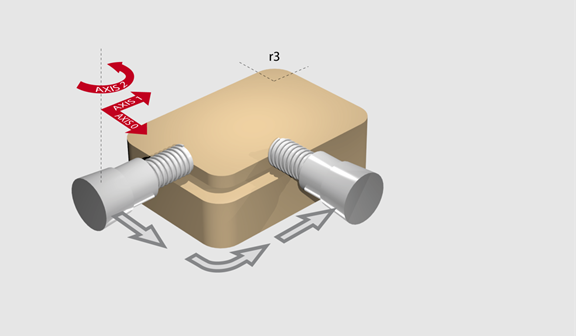
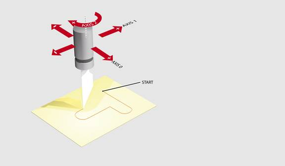

Axis Command
MHELICAL(end1, end2, centre1, centre2, direction, distance3 [,mode])
MH()
Performs a helical move.
Moves 2 orthogonal axes in such a way as to produce a circular arc at the tool point with a simultaneous linear move on a third axis. The first 5 parameters are like those of an MOVECIRC command. The sixth parameter defines the simultaneous linear movement normal to the plane of the circle (the helical component).
Multi-axis interpolation uses the UNITS, SPEED, ACCEL and DECEL of the BASE axis. For correct XYZ vector operation, the UNITS of all 3 axes must be the same.
|
end1: |
position on BASE axis to finish at. |
|
|
end2: |
position on next axis in BASE array to finish at. |
|
|
centre1: |
position on BASE axis about which to move. |
|
|
centre2: |
position on next axis in BASE array about which to move. |
|
|
direction: |
0 |
Arc is interpolated in an anti-clockwise direction |
|
1 |
Arc is interpolated in a clockwise direction |
|
|
distance3: |
The distance to move on the third axis in the BASE array axis in user units |
|
|
mode:
|
0 |
Interpolate the 3rd axis with the main 2 axes when calculating path speed. (True helical path) |
|
1 |
Interpolate only the first 2 axes for path speed, but move the 3rd axis in coordination with the other 2 axes. (Circular path with following 3rd axis) |
|
The first 4 distance parameters are scaled according to the current unit conversion factor for the BASE axis. The sixth parameter uses its own axis units.
The command sequence follows a rounded rectangle path with axis 1 and 2. Axis 3 is the tool rotation so that the tool is always perpendicular to the product. The UNITS for axis 3 are set such that the axis is calibrated in degrees.

REP_DIST AXIS(3) = 360
REP_OPTION AXIS(3) = ON 'All 3 axes must be homed before starting
MERGE = ON
MOVEABS(360) AXIS(3) 'Point axis 3 in correct starting direction
WAIT IDLE AXIS(3)
MOVE(0, 12)
MHELICAL(3, 3, 3, 0, 1, 90)
MOVE(16, 0)
MHELICAL(3, -3, 0, -3, 1, 90)
MOVE(0, -6)
MHELICAL(-3, -3, -3, 0, 1, 90)
MOVE(-2, 0)
MHELICAL(-3, 3, 0, 3, 1, 90)
A PVC cutter uses 2 axis like an XY plotter, a third axis is used to control the cutting angle of the knife. To keep the resultant cutting speed for the x and y axis the same when cutting curves, mode 1 is applied to the helical command.

BASE(0, 1, 2)
MERGE = ON 'Merge moves into one continuous movement
MOVE(50, 0)
MHELICAL(0, -6, 0, -3, 1, 180, 1)
MOVE(-22, 0)
WAIT IDLE
MOVE(-90) AXIS(2) 'Rotate the knife after stopping at corner
WAIT IDLE AXIS(2)
MOVE(0, -50)
MHELICAL(-6, 0, -3, 0, 1, 180, 1)
MOVE(0, 50)
WAIT IDLE 'Pause again to rotate the knife
MOVE(-90) AXIS(2)
WAIT IDLE AXIS(2)
MOVE(-22, 0)
MHELICAL(0, 6, 0, 3, 1, 180, 1)
WAIT IDLE
LIMIT_BUFFERED , MOVECIRC , MOVECIRCSP , MHELICALSP